AriZona Amazon Storefront
Overview
AriZona Beverages has a strong online presence, shipping products through its website and third-party retailers such as Amazon. Designed by the company’s ecommerce manager, the Amazon storefront prioritized product visibility but not visual design nor user experience. As a UX Design Intern I was tasked with enhancing the user experience of the brand’s Amazon storefront by restructured the navigation and redesigning the homepage to create a more visually engaging and intuitive experience.
Roles
- User Experience Designer
- User Experience Researcher
Timeline
June 2026 - August 2026
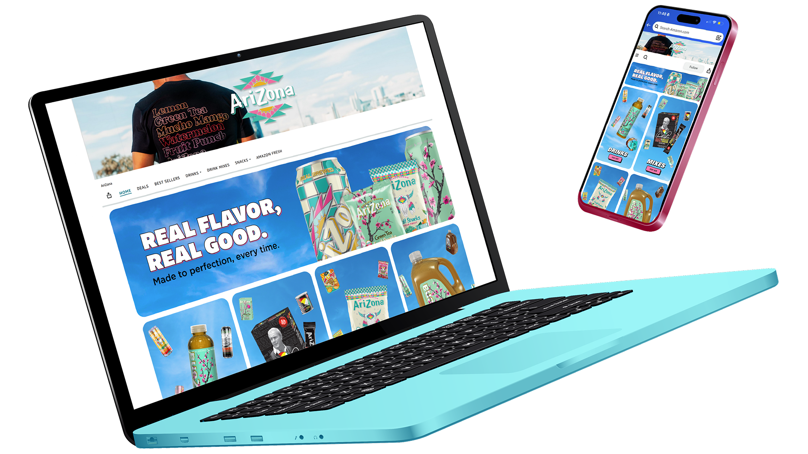
I. Problem
Originating as an iced tea company in Brooklyn, New York in 1992, AriZona Beverages has since expanded into a lifestyle brand selling energy drinks, snacks, apparel, and more. In addition to its presence on store shelves nationwide, AriZona has a strong online presence, shipping products through its website and third-party retailers such as Amazon.
AriZona’s Amazon storefront was designed by the company’s ecommerce manager with a focus on product visibility but not visual design nor user experience. As a UX Design Intern I was tasked with enhancing the user experience of the brand’s Amazon storefront. I restructured the navigation and redesigned the homepage to create a more visually engaging and intuitive experience that aligned with leading competitors.
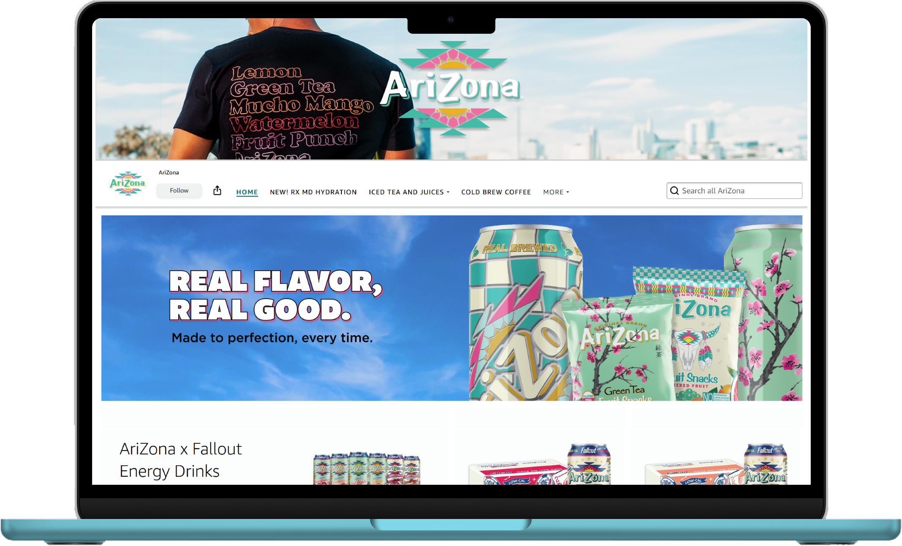
II. Research
To identify opportunities to improve the Amazon storefront I began by conducting a competitive analysis to identify industry best practices to draw inspiration from, and uncover opportunities for the brand to differentiate itself.
I selected five direct competitors in the beverage industry to establish a baseline for direct comparison and evaluate customer expectations. Competitors were evaluated on their product discoverability, value proposition clarity, brand storytelling, lifestyle storytelling, and visual consistency. I selected these five criteria because they assess key aspects of a successful ecommerce experience from helping customers discover and understand products, to communicating a brand’s identity through compelling and visually consistent storytelling. I rated each competitor’s performance on a five-point scale to create a consistent framework for comparison and make key strengths and weaknesses easier to identify, analyze, and communicate.
Through my analysis I found that AriZona performed well with value proposition clarity, clearly highlighting product features and benefits in its product imagery, as well as lifestyle storytelling with its unique and plentiful lifestyle photography. However, I scored the brand’s product discoverability lower because its navigation did not include all product categories; and its brand storytelling also scored lower as there was no content about the company or its values to establish a connection with customers.
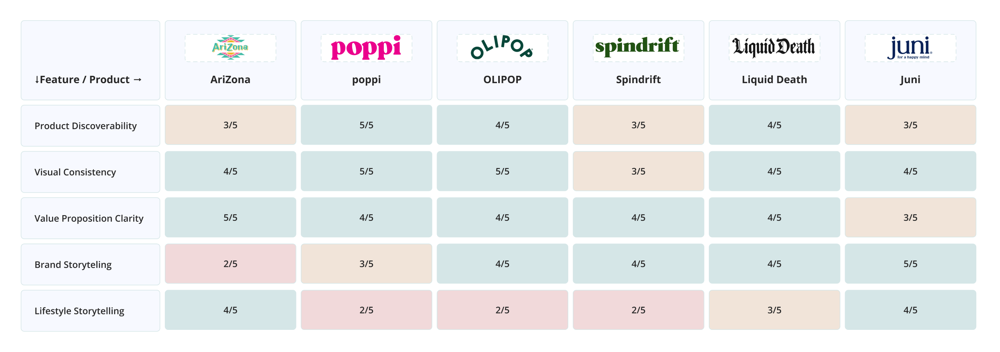
III. Ideation
Navigation Redesign
To improve product discoverability I turned my attention to navigation. As the primary mechanism for traversing the storefront, navigation plays a critical role in helping users understand the breadth of the product catalog, locate products efficiently, and discover items they may not have otherwise encountered.
The storefront’s navigation was divided into five tabs: New; Iced Tea and Juices; Cold Brew Coffee; Powdered Tea - Stix and Mixes; and Fruit Snacks.
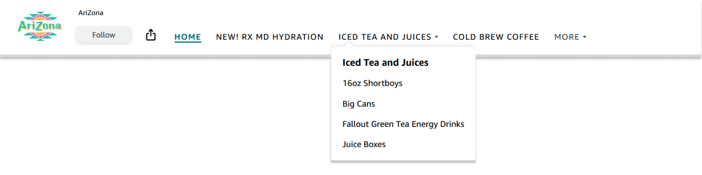
I believed the tabs could be more evenly distributed to surface relevant products more effectively as some represented two categories of products, such as “Iced Tea and Juices”, whereas others contained only a single product, such as “Cold Brew Coffee”. I also thought tab titles could also be condensed as they were lengthy and caused other tabs to be pushed under a ‘More’ dropdown, making them easier for users to overlook.
I revised the navigation by shifting the focus of tabs from specific products to product groups. This highlighted the variety of products offered by AriZona and shortened tab titles so all tabs could be visible at once.
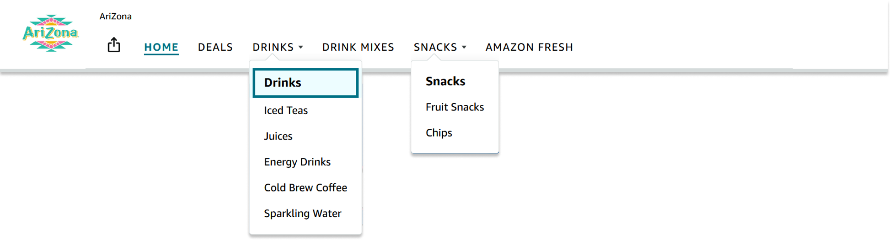
I also reorganized subtabs within each category. The original ‘Iced Tea and Juices’ subtabs alternated between container sizes and types of drinks. For the new “Drinks” tab, I based subtabs on subcategories of drinks such as iced tea, juices, and energy drinks. This creates a more consistent information hierarchy, allowing users to locate products more efficiently. Organizing by drink type also better reflects how consumers typically browse products, making it easier for them to find relevant items.
Homepage Redesign
To strengthen AriZona’s brand storytelling and further improve product discoverability I also redesigned the homepage to showcase products in a more organized and visually engaging presentation of its products. A store’s homepage is the first page users see; it is a critical opportunity to introduce the breadth of the product catalog to users and leave a lasting impression that hooks them to continue shopping.
AriZona’s homepage was dense with products. It contained a lengthy deals section with some products no longer on sale that took up valuable homepage real-estate.
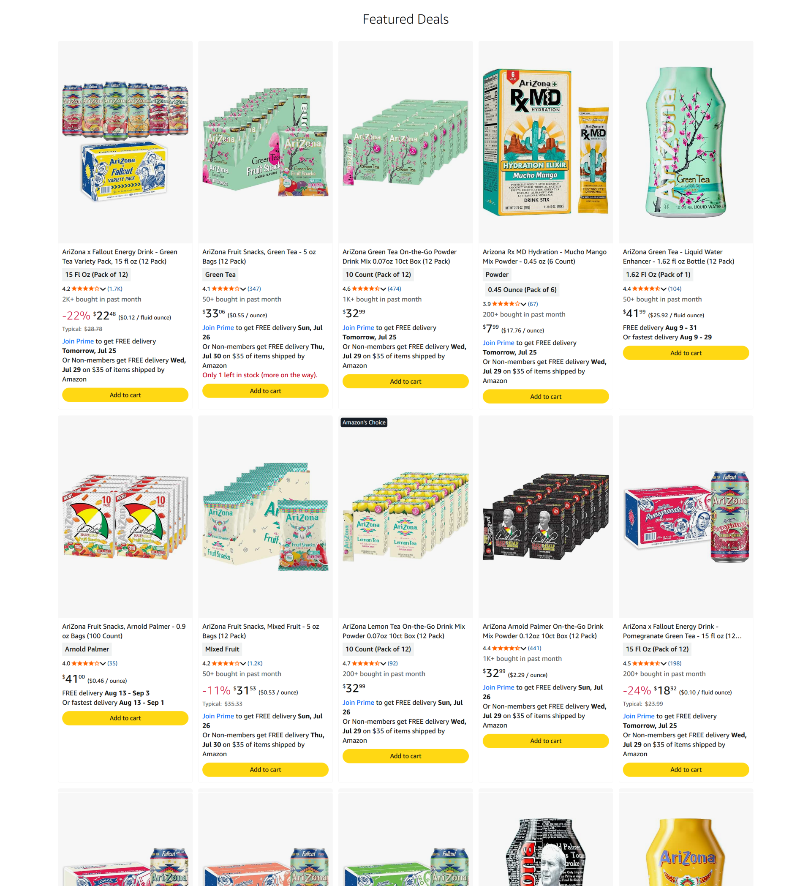
There were also multiple grids of products with no headers to clearly label or distinguish. This large, uninterrupted list of products on the homepage had the potential to overwhelm customers with choice overload, which could increase bounce rates and negatively impact sales.
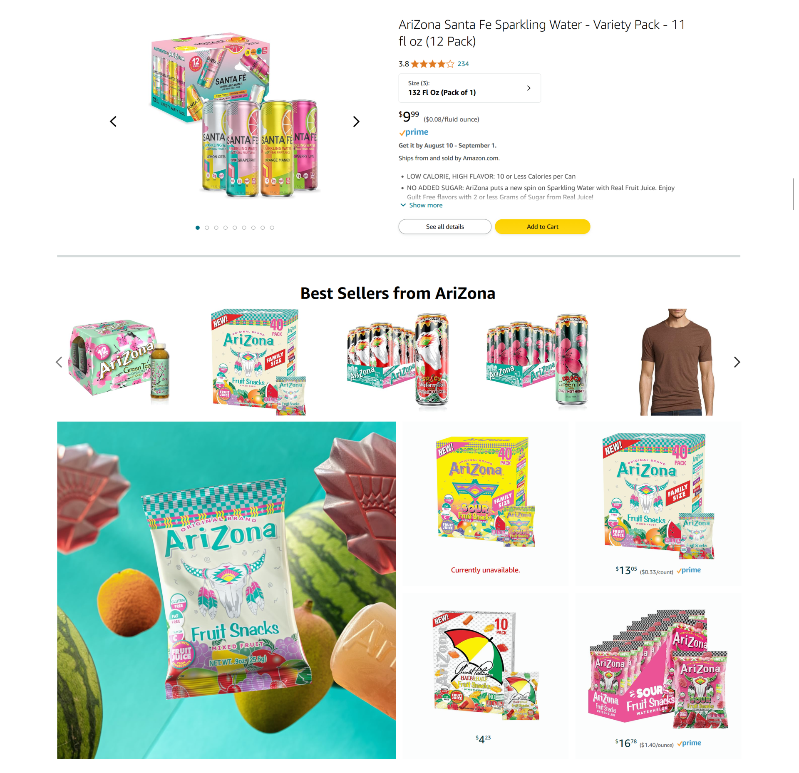
Homepage Design 1
To address these issues, I drafted two homepage concepts. During an earlier conversation the ecommerce manager expressed a preference for Amazon’s standard product widgets as they allow users to quickly navigate to product detail pages. With this in mind, my first design consisted exclusively of pre-built widgets that directed users to product pages and encouraged product exploration.
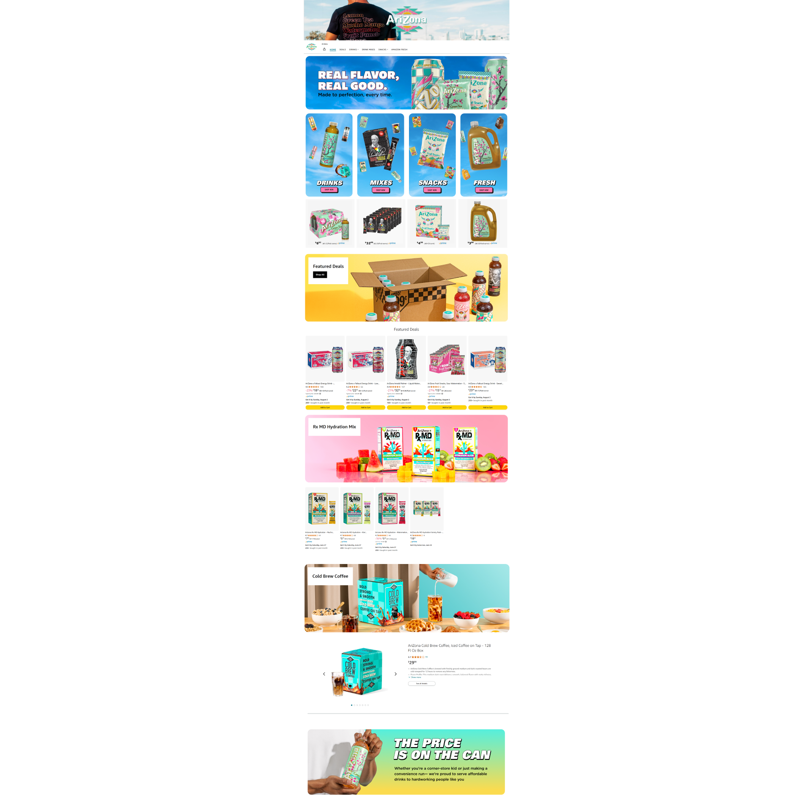
At the top of the design are four widgets representing the four key product types which direct users to their associated subpages. In addition to increasing the visibility of these product groups, these widgets also serve as a mobile-friendly navigation bar. Amazon’s built-in navigation bar is hidden behind a menu on mobile; however, these persistent tiles provide a more visible and accessible pathway to key product categories to mobile users which is crucial as a majority of Amazon users shop on mobile.
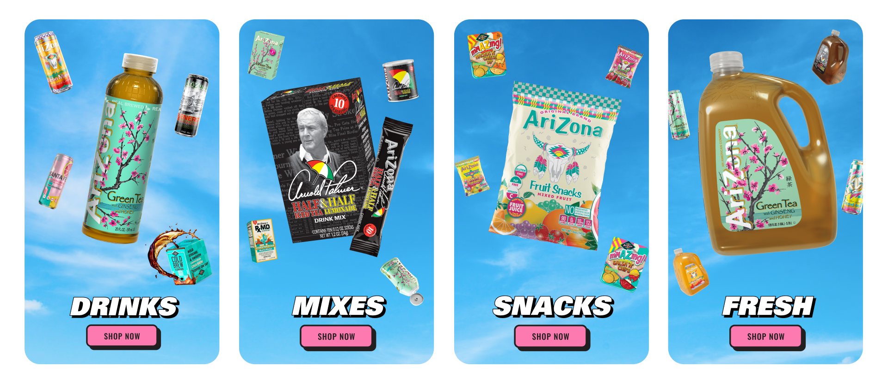
Further down the page are three product sections: featured deals, to spotlight the top sale items; featured products, to strategically draw attention to specific products; and a second featured products section to showcase additional products in AriZona’s expansive catalog. Each section has associated products underneath, enabling users to quickly add them to their cart or investigate them further.
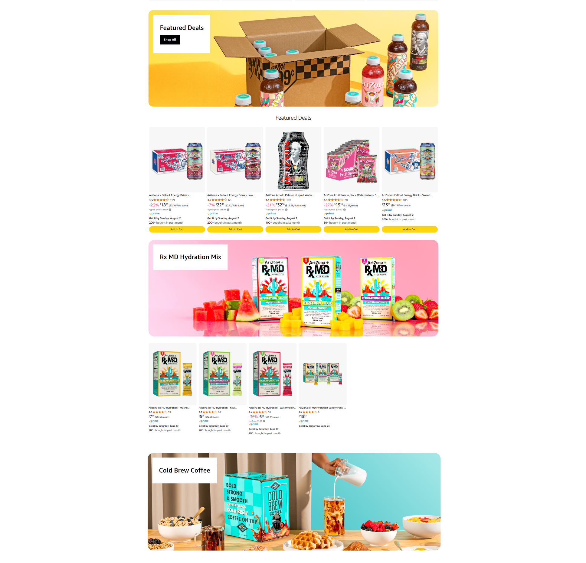
Homepage Design 2
During my competitive analysis I observed that many competitors employed custom banners and widgets. In my second design I created a page entirely composed of custom assets to match contemporary competitors and create more custom interactions to strategically guide users to particular pages or products.
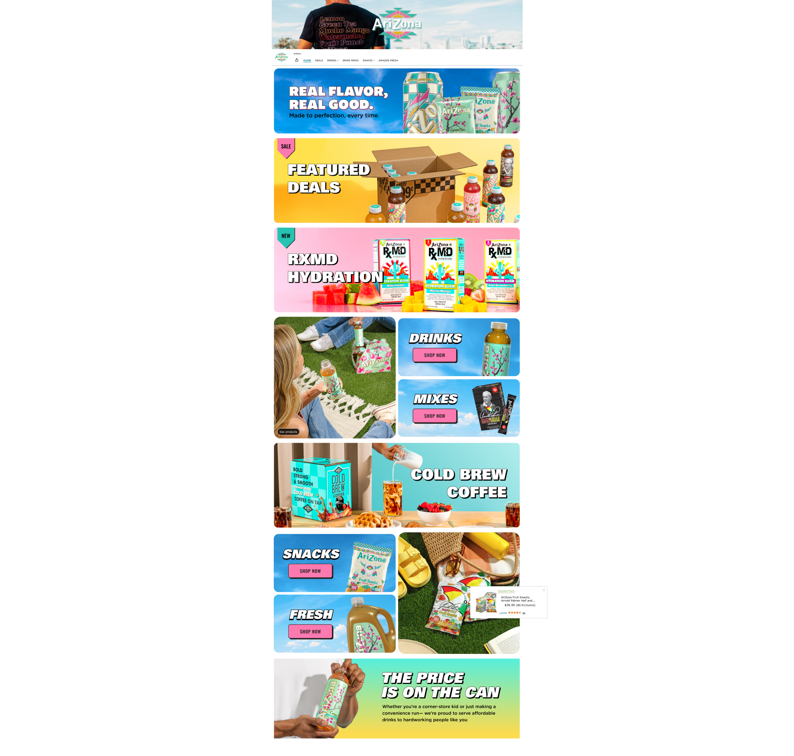
To the left and right of the navigation widgets are shoppable images. These tiles display lifestyle imagery highlighting the use case of a product and directly integrate a link to its product page. I selected these widgets because they serve a dual purpose of improving product discovery while enhancing the visual appeal of the storefront. They are also recommended by Amazon Brand Store quality guidelines, which cite a potential increase in dwell time by 31% and sales by 35%.
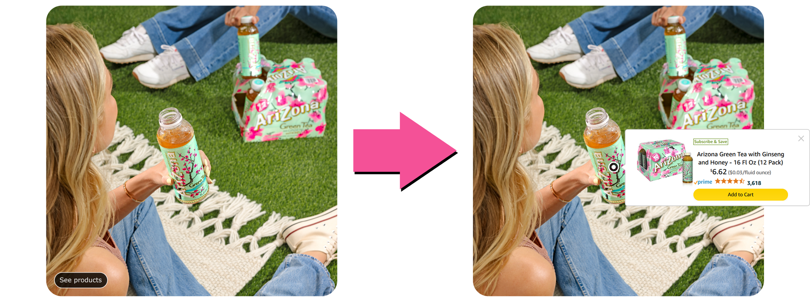
The three product sections in the previous design are represented with custom image banners that, when clicked, lead directly to the products or subpages. As custom images these headers can incorporate custom text to draw greater user attention, and built-in buttons to clearly communicate their interactivity and encourage user engagement.
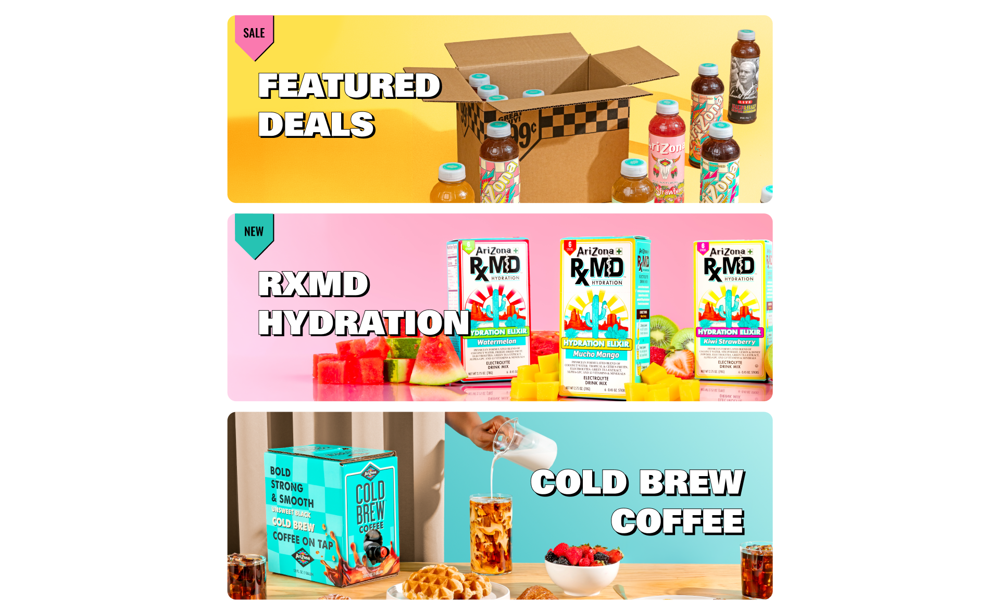
At the bottom of both designs I added a footer containing Arizona’s commitment to affordable pricing and its efforts to combat inflation. Highly engaged users are the ones most likely to scroll to the bottom of the page; by delivering additional messaging in the footer, I aimed to capitalize on this opportunity to reinforce the brand’s value proposition and to build trust with users.
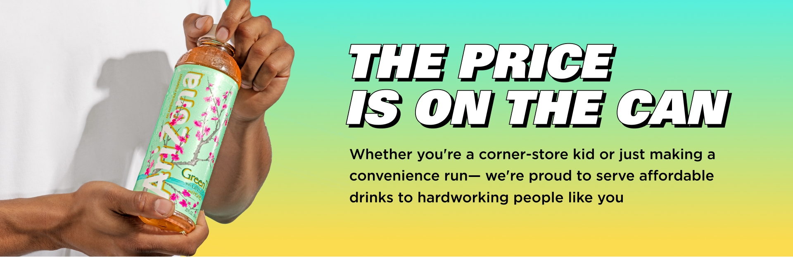
Team Feedback
Both designs were presented to the wider marketing team including the Ecommerce manager, Chief Marketing Officer, and Chief Creative Officer for constructive feedback.
Three key pieces of feedback emerged from the teamwide discussion. First, the CMO and CCO highlighted the shoppable images as an effective way to increase product discoverability. Second, they found the appearance of the second design to be engaging and aligned with brand guidelines but recommended including more \direct product links on the page as a majority of the current sales originated from the homepage. Lastly, the CMO and CCO wished to add a Best Sellers section to spotlight popular items as well.
Homepage Design 3
Based on feedback I created a third design that merged the high product visibility and accessibility of the first design with the eye-catching visual style of the second.
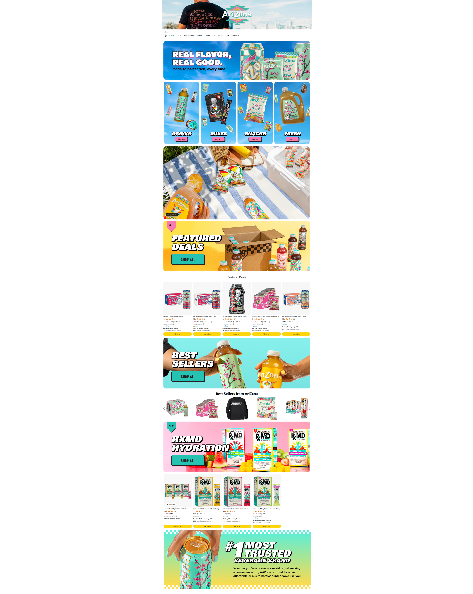
I chose vertical secondary navigation tiles as they displayed more closely together on mobile, making them easier to use.
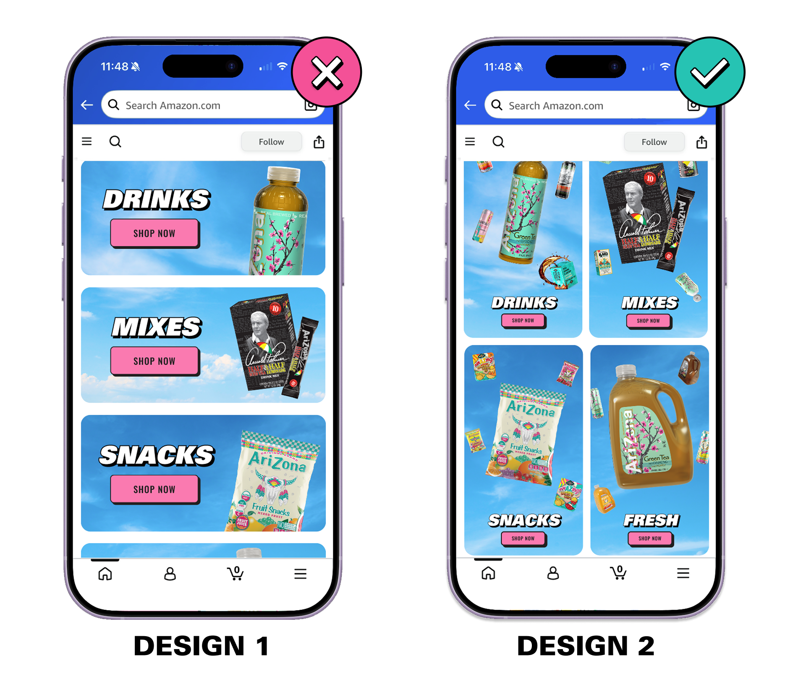
The small, square shoppable images were changed into one large landscape image to showcase multiple products across AriZona’s catalog. I modeled the photo after a picnic scene to naturally incorporate AriZona’s wide variety of products.
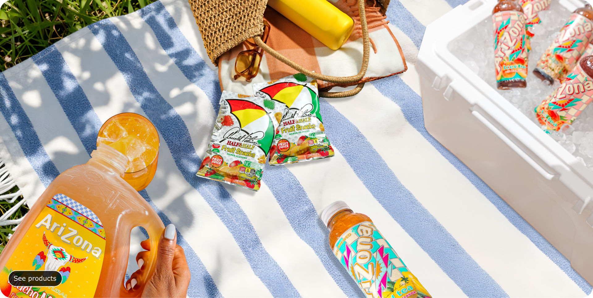
Next, I revised the content and hierarchy of the three main product sections to create a more intuitive path for product discovery while capturing the attention of users and encouraging further exploration.
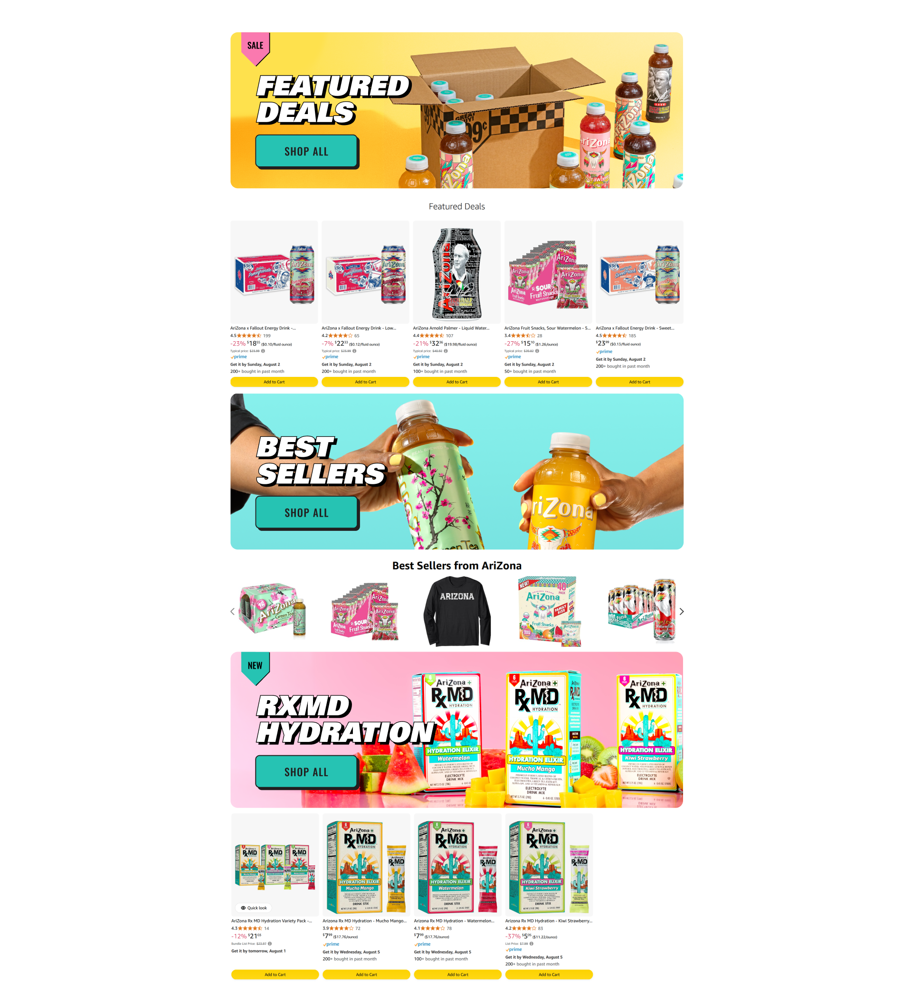
First is the featured deals section. It is eye-catching, drawing the attention of deal seekers and non-deal seekers alike, and providing visitors with a strong hook to start browsing products.
The following section showcases the bestsellers. This section aims to sustain the attention of new customers by providing them with trusted product options based on the purchasing behavior of other customers, potentially reducing uncertainty and increasing the likelihood of purchases.
Last is the new products section. This section introduces returning users to new products to keep the store feeling fresh while also providing new visitors with additional product options and a reason to return for future releases.
Custom banners with built-in CTAs were carried forward from the second design to make their interactivity clear and direct users to desired pages and products.
The footer was updated visually and textually with a greater emphasis on AriZona’s reputation as recommended by the copy editor.
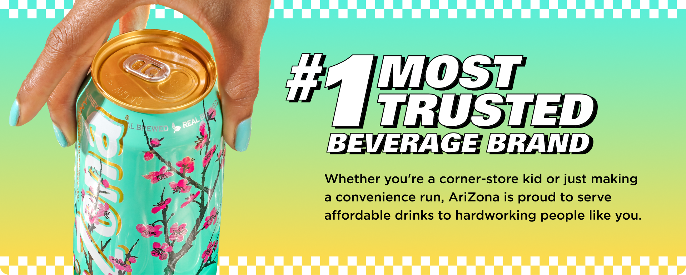
IV. Outcome
The third design was presented to the marketing team and senior leadership once again for feedback. Feedback was positive and highlighted how the redesign strengthened both the storefront’s usability and visual presentation.
With approval from the team I built a test page in Amazon’s Store Builder with the finalized assets and layout so it could be easily deployed to the live Amazon storefront by the ecommerce manager.
I also created a design library containing the templates and implementation instructions for the assets, enabling the team and future designers to modify existing designs or create new versions.
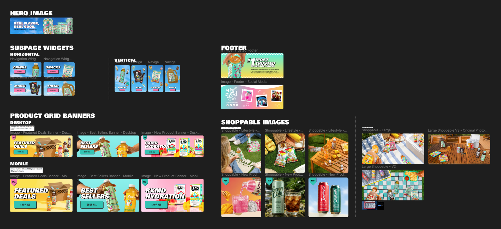
The final design is awaiting deployment on Arizona’s live Amazon storefront and a high-fidelity mockup is available on Figma.
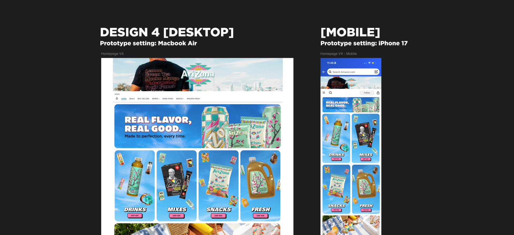
More Work
Trillium LineFinder
Redesigning a tool used by medical providers to determine if a diagnosis and procedure combination is payable by Medicaid.
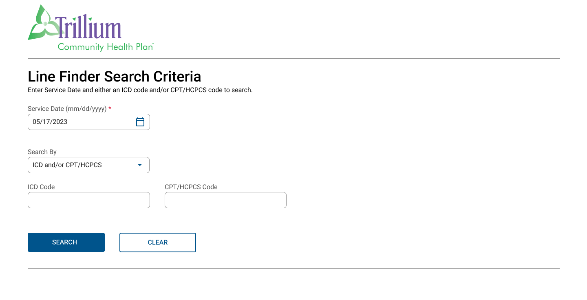